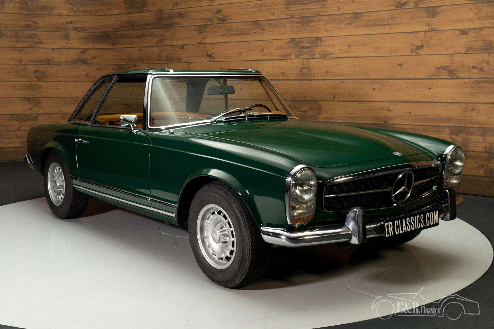

Розділ №1
Mercedes-Benz 230/250/280 SL — серія легких спортивних автомобілів (від нім. Sport Leicht - спортивний легкий) німецького автомобільного концерну Mercedes-Benz, що вироблялася з 1964 по 1971 роки.
Mercedes-Benz 230 SL (W 113) з 1963 по 1967, Mercedes-Benz 250 SL (W 113 A) з 1966 по 1968, Mercedes-Benz 280 SL (W 113 E) з 1968 по 1971 роки.
Зовні всі три моделі серії були однаковими.
Розділ №2

Mercedes-Benz 230 SL був представлений публіці 14 березня 1963 року Женевському автосалоні. Автомобіль замінив не одного, а двох знаменитих попередників - моделі 300 SL і 190 SL, увібравши в себе кращі риси кожної. «Головною нашою метою було створення безпечного і швидкого автомобіля, який, незважаючи на свої спортивні характеристики, мав би високий рівень комфорту.
В наш час, задоволення від спортивного водіння не повинно бути пов'язане з фізичними навантаженнями »- сказав на презентації керівник інженерного департаменту Mercedes-Benz Фріц Наллінгер (англ. Fritz Nallinger). Довгий і низький, з плоскими поверхнями, гострими гранями, величезною емблемою Mercedes спереду і, звичайно, з увігнутим дахом в стилі далекосхідних пагод - таким був дизайн автомобіля, створеного під керівництвом Поля Брака. Двомісний кабріолет оснащувався м'яким складним або жорстким знімним верхом. Новий рядний шестициліндровий двигун розганяв його до 200 км/год.
Розділ №3

Перший у світі спортивний автомобіль, спроектований згідно з вимогами пасивної безпеки.[1].
У широкий продаж автомобіль надійшов влітку і дуже сподобався покупцям, але не чоловікам, а жінкам. Вони високо оцінили автоматичну коробку передач, вперше встановлену Mercedes-Benz на автомобілі такого класу. Як показало майбутнє, це було дуже правильним рішенням, 77% всіх автомобілів цієї серії оснащувалося автоматичною трансмісією.
В Наприкінці 1966 року Mercedes-Benz 230 SL був замінений на 250 SL, в січні 1968 року - на 280 SL. Зовні всі три моделі серії були однаковими, але відрізнялися двигунами різного робочого об'єму, що відображено в індексі кожної моделі. У 1971 році вони були замінені моделями 350 SL і 450 SL нової серії.
Всього було вироблено 48 912 автомобілів Mercedes-Benz 230 SL, 250 SL і 280 SL, 40% з них було експортовано в США.
Двигуни
- 2,308 см3 (2.3 L) M127.II SOHC I6
- 2,496 см3 (2.5 L) M129.II SOHC I6
- 2,778 см3 (2.8 L) M130 SOHC I6
Примітки
1963: Mersedes-Benz 230 SL «Pagoda» (англійською) . Mercedes-Benz Classic. Архів оригіналу за 11 грудня 2012. Процитовано 20 листопада 2012.